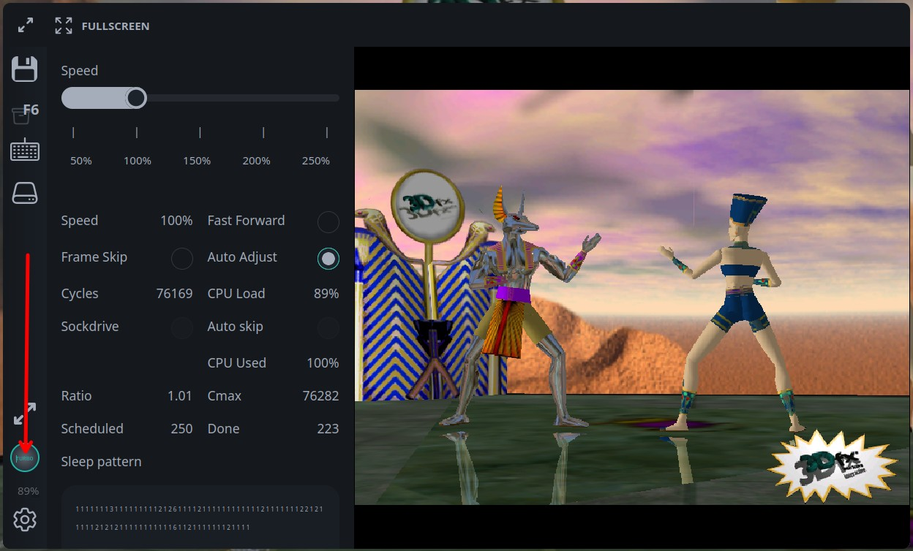

Turbo
The Turbo panel lets users tune emulator speed while a bundle is running. Use it to speed up slow startup sequences, reduce load in heavy scenes, or lock a game to a more stable CPU configuration.
Open the panel with the Turbo button in the sidebar. The button is highlighted while the panel is open. It is also marked as active when any non-default turbo option is enabled: manual CPU mode, speed different from 100%, fast forward, or frame skip.

Speed
The Speed slider changes the target emulator speed from 50% to 250% in 5% steps. It is available only when automatic CPU adjustment is enabled and the backend reports that speed control is supported.
Use this control for temporary tuning:
lower speed if a game runs too fast or audio starts to stutter
raise speed to pass loading screens, installations, or slow non-interactive moments
return to
100%for normal gameplay
The current measured emulator speed is shown in the Speed metric below the slider.
Fast Forward
Fast Forward asks the backend to run as fast as possible. It is useful for booting an OS, skipping installers, or passing long loading screens. Disable it before precise gameplay, because it changes timing aggressively.
For sockdrive bundles, you can also start with fast forward enabled for a fixed boot window by using fastForwardOnBoot in Player API.
Frame Skip
Frame Skip reduces rendering work by skipping frames. The panel toggle switches frame skip between 0 and 2.
Use it when the emulator is CPU-bound or the browser cannot render every frame smoothly. The game simulation continues, but visual motion becomes less smooth while frame skip is enabled.
Auto Adjust
Auto Adjust lets DOSBox adjust CPU cycles automatically. This is the default and works well for most DOS games.
Disable Auto Adjust when a game needs a stable fixed CPU speed. When it is disabled, the Cycles field appears. Enter a fixed cycles value there. js-dos applies valid values from 3000 to 1000000.
Typical workflow:
Start with Auto Adjust enabled.
Watch CPU Load, CPU Used, and game smoothness.
If the game has timing problems, disable Auto Adjust.
Set Cycles manually and retest.
Metrics
The Turbo panel also shows runtime metrics:
metric | meaning |
|---|---|
Speed | current measured emulator speed |
Cycles | current CPU cycles limit reported by the backend |
CPU Load | how much scheduled CPU work was completed |
Sockdrive | whether sockdrive I/O is affecting CPU scheduling |
Auto skip | whether the backend is automatically skipping work to keep up |
CPU Used | share of host CPU budget used by emulation |
Ratio | internal timing ratio used by the auto-adjust logic |
Cmax | current calculated maximum cycles value |
Scheduled | scheduled CPU ticks |
Done | completed CPU ticks |
The Sleep pattern block is mainly diagnostic. It helps compare how the backend sleeps, catches up, and schedules work while you tune speed, cycles, fast forward, and frame skip.
Recommended usage
For DOS games, keep Auto Adjust enabled first and use Speed only when needed. If the game depends on old CPU timing, switch to manual Cycles and tune gradually.
For Windows 9x games, avoid changing too many controls at once. Use Fast Forward for boot, then return to normal speed before launching the game. If rendering is heavy, try Frame Skip before lowering cycles.